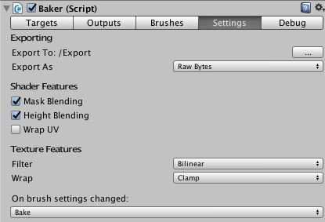

Targets
The submeshes you want to target. Get started here.
Outputs
The textures to output. More info here.
Brushes
List of brushes targeting submeshes in this Baker.
Settings
Export Settings
Export settings deal with exporting all the textures. Covered in Getting Started.
Shader Features
Mask Blending enables the use of mask textures (enabled by default) and Height Blending enables the use of height blending textures (enabled by default). But they come at a small performance cost. With Mask Blending and Height Blending enabled, 4 brushes will be painted per pass. With only one enabled 7 brushes will be painted per pass, and with neither enabled 14 brushes will be painted per pass.
Wrap UV
Just leave this disabled and ignore it. In a rare event a submesh might have uv's that are outside the normal 0-1 range. Enabling this will fix this, so textures can generate properly.
On brush settings changed
When you modify brush settings or move a brush around it is nice to see the effects instantly, without having to click Bake all the time. Use this drop down to determine what you want to happen when brush changes are made.

Baking API
Bake(); // Bake all sets.
Bake(BakeSet.BakeSet1); // Just bake set 1.
RevertTextures(); // Use the original input textures.
RevertMaterials(); // Use the original materials. (Only necesarry if you are in preview mode.)
Revert(); // Revert textures & materials.
UseBakedTextures(); // Use output textures.
ClearAll(); // Mark textures to be cleared. The effect will only be visible after Bake is called.
Export(); // Will export everything to exportPath.
Export(BakeSet.BakeSet1); // Will export set 1.